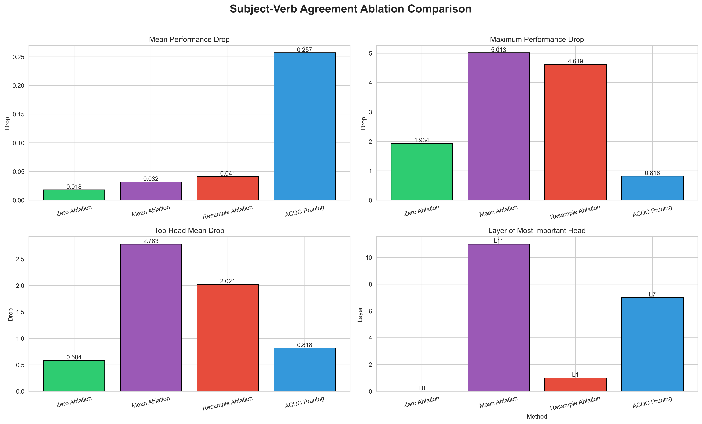

Methods
4
Shared Records
144
Highest Max Drop
5.0132
Largest Top Head
2.7831

Comparison Table
| Method | Records | Mean Drop | Median Drop | Std Dev | Min Drop | Max Drop | Top Head | Top Head Drop | Top Head Layer | Positive Count | Negative Count |
|---|---|---|---|---|---|---|---|---|---|---|---|
| Zero Ablation | 2304 | 0.0179 | 0.0027 | 0.2080 | -1.2158 | 1.9345 | L0H9 | 0.5835 | 0 | 1180 | 1124 |
| Mean Ablation | 2304 | 0.0316 | 0.0019 | 0.2906 | -0.9091 | 5.0132 | L11H8 | 2.7831 | 11 | 1256 | 1048 |
| Resample Ablation | 2304 | 0.0410 | 0.0024 | 0.3065 | -1.7088 | 4.6187 | L1H10 | 2.0212 | 1 | 1241 | 1063 |
| ACDC Pruning | 144 | 0.2568 | 0.2655 | 0.1030 | 0.0143 | 0.8178 | L7H4 | 0.8178 | 7 | 144 | 0 |
Reading the comparison: Zero ablation is the most aggressive intervention, mean ablation preserves
average activation magnitude, resample ablation preserves realistic activation content while breaking context,
and ACDC iteratively prunes heads based on a loss threshold.
The table above uses the best head from each method's full ablation sweep.